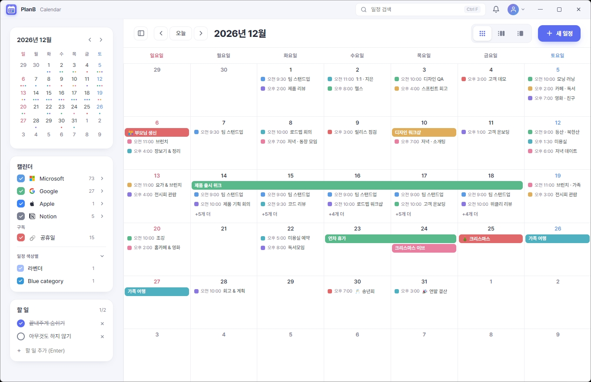
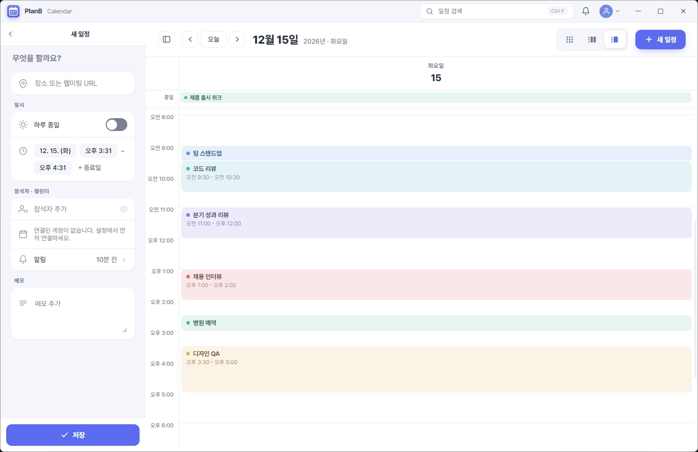
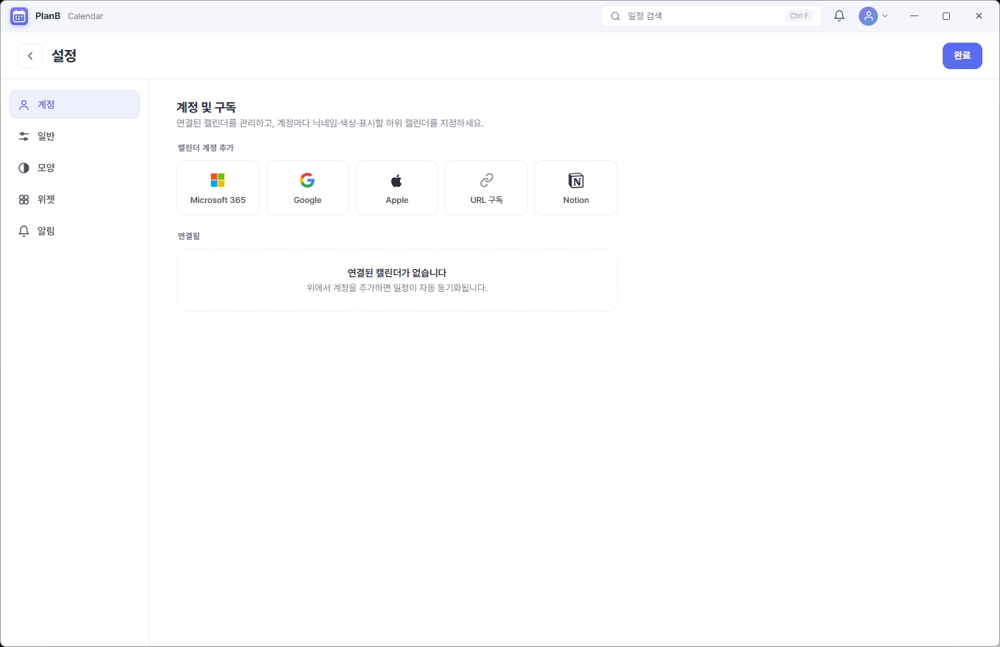
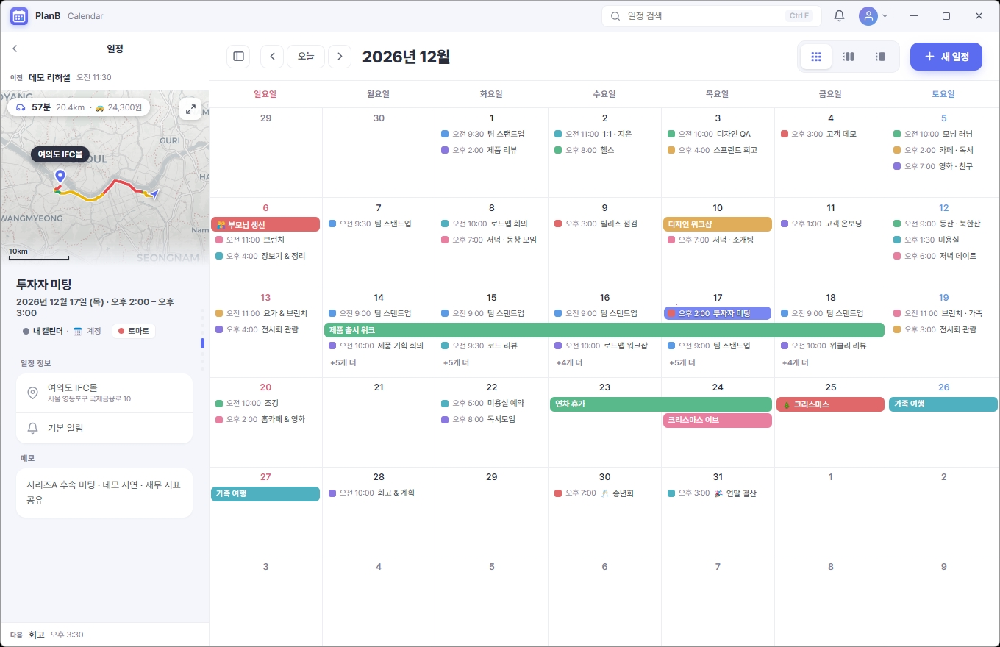
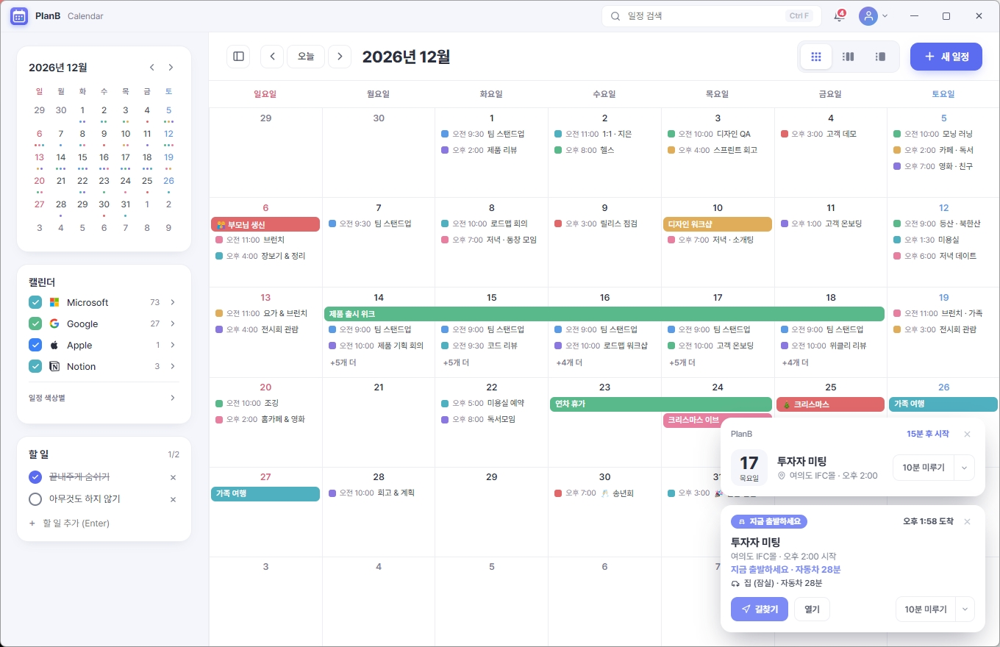
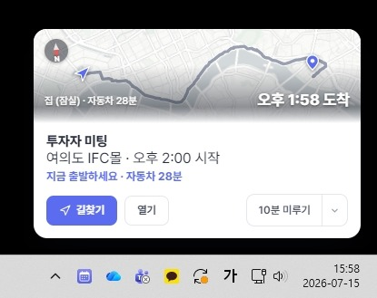
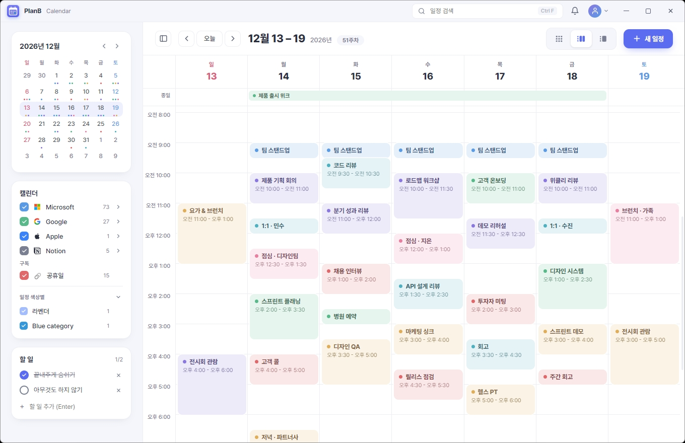
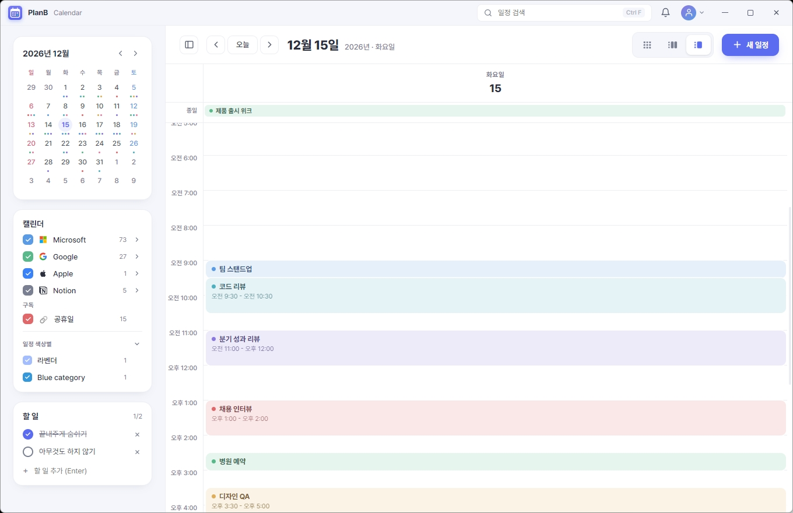
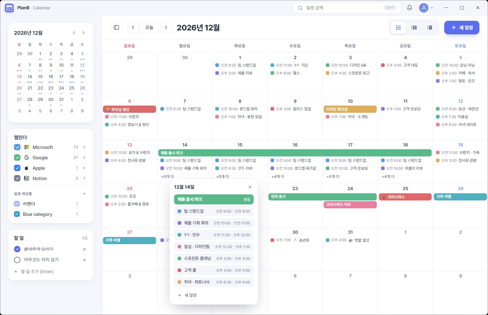
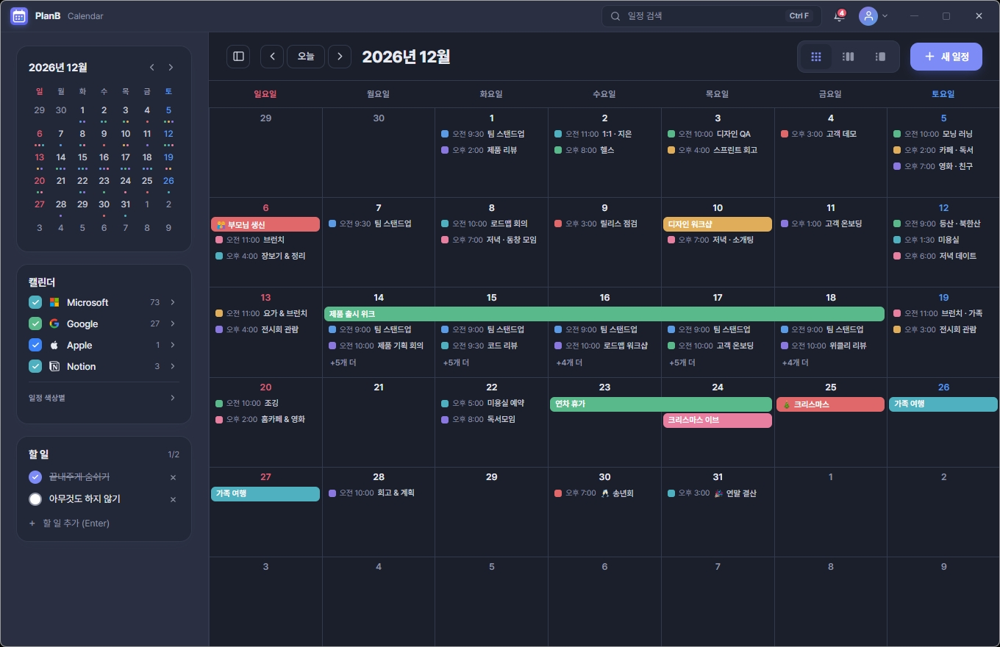

PlanB Calendar는 Google · Microsoft 365 · Apple · Notion · ICS 구독 캘린더를 한곳에 모아 관리하는 Windows 데스크탑 캘린더 앱임. 앱에서 만들고 고치면 원본에 바로 반영됨. 브라우저 탭 말고, 늘 켜두는 앱.

계정을 연결하면 흩어져 있던 일정이 한 번에 들어옵니다. 같은 서비스라도 계정을 여러 개 붙일 수 있어요.
실제 화면임. 마케팅용 그림이 아니라 앱을 그대로 보여줌.
앱에서 일정을 만들거나 고치면 Google·Microsoft 365 등 각각 연결된 캘린더에 즉시 반영됩니다. 폰이나 웹에서 봐도 똑같아요.

회사 M365, 개인 Google, 가족 iCloud를 다 붙여도 색으로 구분됨. 계정마다 닉네임·색·표시 여부를 정할 수 있음.

장소가 있는 일정은 이동시간·교통을 반영해 "지금 나가세요"를 띄움. 앱이 꺼져 있어도 알림이 옴.

시작 전 일정 알림과, 장소가 있으면 이동시간을 계산한 출발 알림이 각각 뜸. "지금 출발하세요 · 자동차 28분"처럼 언제 나가야 할지 딱 알려줘요.


앱을 닫아둬도 Windows 알림으로 그대로 옴
겹치는 일정도 창 크기에 맞춰 알아서 정리됨.


일정이 많은 날은 "+N개 더"를 누르면 그날 전체를 팝오버로 펼쳐 보여줌. 화면을 옮기지 않아도 됨.

앱 전체 테마를 라이트·다크로 바꿀 수 있음. 시스템 설정을 따라 자동으로 전환되게도 됨.

월간 달력과 오늘 일정을 바탕화면에 띄움. 크기 조절·항상 위 고정됨.
시스템 설정을 따라 자동 전환됨. 강조색도 바꿀 수 있음.
일정은 내 기기에 먼저 저장됨. 동기화는 연결한 계정을 통해서만 함.
마우스 없이 키보드로 바로. 새 일정 N·오늘 T·월/주/일 M·W·D·검색 Ctrl+F·되돌리기 Ctrl+Z.
제공자에 따라 동기화 방식이 다름.
| 서비스 | 지원 방식 |
|---|---|
| Google Calendar | 양방향 (생성·수정·삭제) |
| Microsoft 365 (Outlook) | 양방향 (생성·수정·삭제) |
| Apple iCloud | 양방향 (앱 전용 암호로 연결) |
| Notion | 양방향 (연동 연결) |
| URL(ICS) 구독 | 읽기 전용 (공휴일·외부 일정 등) |
Google Calendar, Microsoft 365(Outlook), Apple iCloud, Notion, URL(ICS) 구독을 지원함. Google·Microsoft·Apple·Notion은 양방향, ICS는 읽기 전용임.
앱에서 만들거나 고친 일정이 원본 캘린더에 바로 반영됨. 폰·웹 등 다른 기기에서도 똑같이 보임.
무료임. Windows 10·11용 설치형 프로그램으로 제공됨.
로컬 우선으로 내 기기에 저장됨. 동기화는 사용자가 직접 연결한 계정을 통해서만 이뤄짐.
Apple ID와 앱 전용 암호로 연결하면 양방향으로 동기화됨.본 비밀번호를 안 열어줘서 앱 전용 암호를 씀.